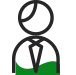
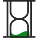
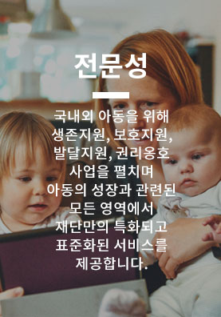
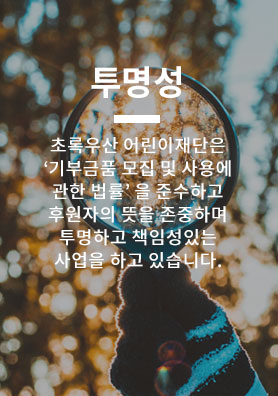
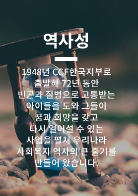
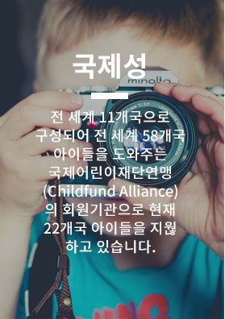

재단소개
어린이를 돕는 일,
초록우산 어린이재단이 합니다.
어린이는 우리의 미래!
어린이를 돕는 일, 초록우산 어린이재단이 합니다.
" 왜 초록우산 어린이재단을 신뢰할까요? "
1948년 문을 연 초록우산 어린이재단은 1950년 6.25전쟁 고아 구호사업에 집중한 이후 현재에 이르기까지 국내외 아동복지사업,
애드보커시, 모금사업, 연구조사 등을 폭넓게 실시하고 있는 아동옹호대표기관입니다.
현재 국내·외 아동 연간 약 100만명에게 직·간접 도움을 주며 그들의 미래를 열어가는 일을 하고 있습니다.
- 
전문성
-
투명성
- 
역사성
-
국제성
- 
- 
- 
- 